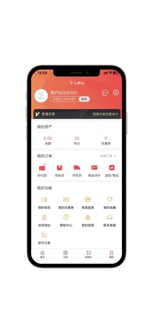

海外游戏点卡哪家强？Kardz 放在同类里到底排第几
从 Steam 礼品卡到海外成品账号，Kardz 走的是一条和传统点卡平台不太一样的路。这篇从用过同类几家之后的视角，聊聊它的定位、差异化和那些你可能踩的坑。
海外游戏圈子里，点卡和账号交易从来不是什么新鲜事。Steam 礼品卡、Switch 美服兑换码、PSN 充值卡——你想给海外账户充值，绕不开这一环。早些年大家找代充、碰黑卡、蹲贴吧收二手，后来有了一批专门做海外虚拟商品的平台，把散兵游勇的交易收进了正规军。
但正规军之间也分梯队。有的平台什么都卖，从游戏道具到手机号卡一条龙；有的专盯 Steam，把一个品类做透；还有的把重心放在账号交易上，走的是另一条线。Kardz 站在这中间的位置——去它的官网逛一圈就能感觉出来，它既做卡密也做成品账号，而且两边的自动发货都做得相当彻底。如果你之前在同类平台上踩过卡密发错、等客服半小时的坑，那这篇专门聊它，不是没道理的。
同类格局里，它排在哪儿
先给一个宏观坐标。目前做海外虚拟商品的平台大致分三类：
- 垂直类：专门做 Steam 或某一家主机平台，价格有优势但品类窄；
- 综合类：卡密、账号、代充都做，像个虚拟商品百货商场；
- 代充/灰色地带：不走平台流程，贴吧、QQ 群私下交易，价格最低但风险也最大。
Kardz 属于综合类，但它不像有些综合平台那样"什么都做什么都不精"。它的品类集中在几个高需求场景：Steam 礼品卡为首的各大平台充值卡、海外成品账号（推特、油管、OnlyFans 这类）、还有一些数字商品和会员卡。品类不杂，但每个品类的自动发货流程都打通了。
这个定位决定了它的用户画像：不是那种蹲最低价的硬核玩家，而是需要一个靠谱、省事、拿到就能用的虚拟商品入口。
差异化一：全自动发货到底有多重要
我在别的平台上有过这种经历：买完卡密等客服发码，下午三点买的晚上七点才拿到。或者买了账号，客服先要确认订单再走内部流程，等的过程中心里一直在打鼓——会不会是黑号？会不会被封？
Kardz 把这个环节完全砍掉了。先去官方下载拿到 APP，无论是卡密还是账号，付款后直接在订单中心提取，全程没有人工介入。文档里写得很清楚：海外账号类商品全部是自动发货，付款后立即可用。
这个差别听起来不大，但体验上是质的变化。买 Steam 礼品卡，晚上想买个新游戏，付款 → 复制卡密 → 粘贴到 Steam 钱包，三分钟搞定。如果走传统平台，这时间里你可能已经忘了当初为什么想买那个游戏了。
自动发货还有一个好处是排除了人为差错。客服手滑发错卡密、多位数少一位这种事在代充平台上不罕见。全流程自动走的话，错的概率只取决于库存本身有没有问题——如果有问题，也是整批的问题，不是个体事故。

差异化二：多语言多货币切换——真的是写给海外玩家看的
很多国内做海外生意的平台，界面还是全中文，价格按人民币标。对于习惯了美元定价的海外玩家来说，这体验相当割裂——他们不知道这个人民币价换算成自己熟悉的美元到底贵不贵，还要自己手动算汇率。
Kardz 的做法是在设置里加了语言和货币两个切换项。界面可以切英语，价格可以切美元显示，但实际结算还是人民币。Kardz文档里特意说明了这一点：货币切换只是帮你对照游戏内显示的价格，最终还是按人民币付钱。
这个设计很聪明，也很务实。它没有为了国际化去支持多币种结算（那样合规成本会高很多），但在展示层面解决了海外用户最明显的痛点——看不懂人民币价、不知道和游戏内购价差多少。
当然，汇率是平台内部结算汇率，和银行实时汇率有小幅差异。但作为对照参考够用了，真正支付的人民币金额不会因为你切了货币就变。
差异化三：账号售后的边界画得比别家清楚
虚拟商品售后难是行业共识。账号一旦交出去，卖家无法验证买家有没有用过、改没改密码、转没转别人——所以很多平台的售后条款写得特别模糊，账号类商品基本是"发货概不退换"。
Kardz 也不例外，账号类商品发货后确实不支持无条件退款。但它把什么情况可以售后写得特别明确：账号无法登录、被封、或者商品描述和实际不符（比如说是全新号实际是老号）。而且给了具体的操作路径：24 小时内联系客服、提供订单号和截图、还有投诉通道。
这个边界清晰本身就是一种价值。你买之前就知道哪些情况能退哪些不能，不会像在别的平台那样抱着"试试看能不能退回"的心态去碰运气。
售后流程的承诺也比较实在：库存不足时会在 24-48 小时内补货，超期自动退款。虽然不是秒退，但给了明确的时间窗。

它的代价：便利不是免费的
说了三个好的，也要说三个不好的。自动发货和清晰售后的代价是什么？
首先是价格。Kardz 走的是"便利溢价"路线，不会是全网最低价。你在贴吧能收九五折的 Steam 卡，在这里可能就是原价甚至加一点。如果你追求极致省钱，那 Kardz 不是最优选择。
其次是品类聚焦。它做综合但不是全品类，一些小众平台的卡密你可能找不到。比如某些小语种地区的平台充值卡，Kardz 就没有覆盖。如果你需要特别冷门的商品，可能得绕去专门的垂直平台。
最后，账号类商品的售后边界虽然清晰，但发货后不退款这个核心规则没有变。你自己改密码忘了、或者借给别人用被封了，这些情况都不在售后范围内。它的售后是解决质量问题，不是帮你擦使用失误的屁股。
选购结论：什么样的人选它
写了这么多，其实结论很简单。
你应该选 Kardz，如果：
- 你嫌传统平台等客服发码太慢，想要付款即用的便利；
- 你同时需要卡密和账号，不想在多个平台之间来回切；
- 你需要海外账号但又怕踩黑卡、黑号的坑，想要一个有明确售后边界的正规入口；
- 你偶尔需要帮海外朋友买东西，语言和货币切换能省不少事。
你可以不用 Kardz，如果：
- 你只买 Steam 卡，而且就在乎价格，那垂直的 Steam 卡平台更便宜；
- 你对平台没有特殊要求，一直用的老平台服务还行，没必要换；
- 你追求极致低价，愿意去灰色地带碰代充——但这条路的风险你自己心里有数。
我自己的结论是，Kardz 最适合的场景是"我急着用、我不想等、我不想担风险"。这三个关键词里的任何一个成立，它就是值得用的。反之，你可能找到更便宜的选择，但省下来的那几块钱能不能抵消你在别的平台上浪费的时间和心情，得自己算算。
这套平台和它的文档资料在三个仓库都有备份——GitHub、Gitee、GitCode——无论你习惯用哪个代码托管服务都能找到。维护更新也是实时同步的，所以即便某一边暂时访问不了，还有另外两份可以查。